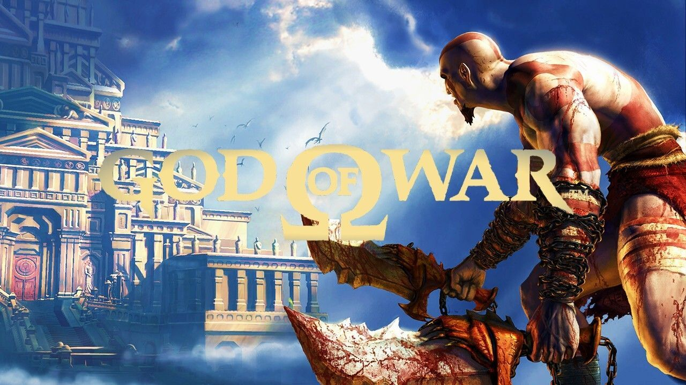

God of War 1 PlayStation PS2 Formato Fisico Manual,Disco,Caja

$350 mxn
Envio ($)
Descripcion
¡Vive la furia de Kratos en su misión de venganza!
Sumérgete en una aventura épica en God of War, un juego de acción y aventuras exclusivo para PS2. Juega como Kratos, un guerrero espartano atrapado en una guerra entre dioses y monstruos mitológicos. Con gráficos impresionantes para su época, combate visceral y una historia cautivadora, este título te llevará a enfrentarte a criaturas legendarias y a resolver complejos acertijos mientras buscas redención.
¡No te pierdas la oportunidad de experimentar el inicio de una de las sagas más icónicas de los videojuegos!